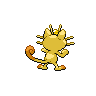

| 1 |  |  | Bulbasaur | Grass | Poison | 318 | 45 | 49 | 49 | 65 | 65 | 45 | 1 | False | I like Bulbasaur because it's just a
cute lil dude, chilling out
with that bulb on its back. |
| 2 |  |  | Charizard | Fire | Flying | 534 | 78 | 84 | 78 | 109 | 85 | 100 | 1 | False | Call me basic, but Charizard is on here
just because it's such an
iconic pokemon. |
| 3 |  |  | Squirtle | Water | | 314 | 44 | 48 | 65 | 50 | 64 | 43 | 1 | False | Squirtle is on here just by virtue of
being so cute and cuddlable. |
| 4 |  |  | Beedrill | Bug | Poison | 395 | 65 | 90 | 40 | 45 | 80 | 75 | 1 | False | I've always loved the character design
design of Beedrill, looking
so cool, girlbossing around |
| 5 |  |  | Rattata | Normal | | 253 | 30 | 56 | 35 | 25 | 35 | 72 | 1 | False | Rattata is on this list, once again,
because it's an absolutely iconic
pokemon. |
| 6 |  |  | Ninetales | Fire | | 505 | 73 | 76 | 75 | 81 | 100 | 100 | 1 | False | I chose Ninetails because the East Asian
legends of different animal
spirits are so cool to learn about. |
| 7 |  |  | Meowth | Normal | | 290 | 40 | 45 | 35 | 40 | 40 | 90 | 1 | False | Back when I played the card game, Meowth
was one of my first cards, and
thus deserved a spot here. |
| 8 |  |  | Graveler | Rock | Ground | 390 | 55 | 95 | 115 | 45 | 45 | 35 | 1 | False | Graveler is here because I still remember
how angry my sister used to get
fighting them. |
| 9 |  |  | Farfetch'd | Normal | Flying | 352 | 52 | 65 | 55 | 58 | 62 | 60 | 1 | False | Farfetch'd literally just has an awesome
name, and it's so cute too. |
| 10 |  |  | Gyarados | Water | Flying | 540 | 95 | 125 | 79 | 60 | 100 | 81 | 1 | False | Once again, Gyarados played an important role
in my early plays of Pokemon,
and holds a place dear to me. |